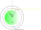
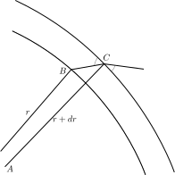
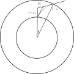
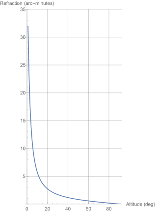
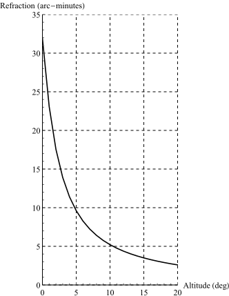
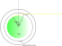
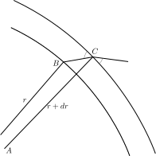
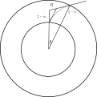
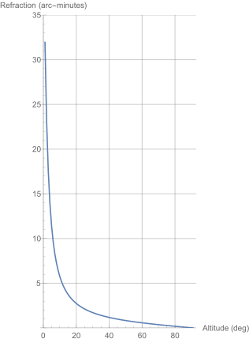
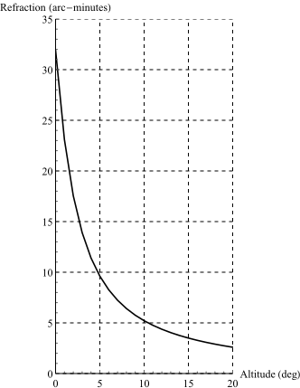

December 2018
So while I was freezing in a cold sleeping bag, I tried to think warm thoughts and must have thought of African sunsets or something, because this interesting question came up in my mind!

Now on to the fun part! Without an atmosphere, exactly half of the Earth is illuminated by the sun at any time. The refractive properties of the atmosphere mean that a little bit more is illuminated. We'd like to find how much time it takes from Jacob to go from the "theoretical" boundary of illumination to the real boundary of illumination. That varies by latitude and time of year, so we'll tackle it later. First, let's calculate how much more of Earth's surface is illuminated due to the refraction.
Light from the sun approaches the Earth as parallel rays and hits the boundary of the atmosphere, which we will assume to be located at the Karman line, $10^5$ meters above the surface of the Earth. Then it refracts in the atmosphere, and the light rays hitting the boundary of illumination will be tangent to the surface of the Earth at that point.

Now we will trace the light ray backwards, starting from Jacob the observer, who is standing at the boundary of illumination, $\alpha$ to the left of the vertical. We can describe any point on the path of the light ray using three variables: $\theta$ is its angular displacement from the observer with respect to the center of the Earth, $r$ is the distance from the center of the Earth, and $\phi$ is the angle that the light ray makes at that point with the tangent plane to the ground beneath it.
These three variables are related to each other. At the observer's position, $\theta = 0,r=R_E,$ and $\phi = 0.$ At the point where the light ray leaves the atmosphere, $r = R_{\text{max}}.$ Since the light ray is horizontal when it leaves the atmosphere, $\theta - \phi = \alpha$ at that point.
Now consider the atmosphere as being composed of concentric shells of air. A shell with inner radius $r$ and outer radius $r+dr$ contains air with an index of refraction $n(r).$ Consider how the path of the ray changes as light passes through one shell and through one shell boundary.

We let $\angle A = d\theta,\angle B = \dfrac{\pi}{2}+\phi,\angle C = \dfrac{\pi}{2}-\phi-d\theta.$ Application of law of sines gives $$\dfrac{\sin\left(\pi/2 - \phi - d\theta\right)}{r} = \dfrac{\sin(\pi/2+\phi)}{r+dr}.$$ This gives $$\phi + d\theta = \dfrac{\pi}{2} - \arcsin\left(\dfrac{r}{r+dr}\sin\left(\dfrac{\pi}{2}+\phi\right)\right),$$ and this is the labelled angle on the left. Snell's Law tells us that $$n(r)\cos(\phi + d\theta) = n(r+dr)\cos(\phi+d\phi),$$ and solving and substituting gives $$\phi + d\phi = \arccos\left(\dfrac{n(r)}{n(r+dr)}\cos\left(\dfrac{\pi}{2}-\arcsin\left(\dfrac{r}{r+dr}\sin\left(\dfrac{\pi}{2}+\phi\right)\right)\right)\right).$$ Some quick trigonometric identities simplifies this to $$\phi + d\phi = \arccos\left(\dfrac{n(r)}{n(r+dr)}\cdot\dfrac{r}{r+dr}\cos\phi\right).\qquad(1)$$ Futhermore, returning to our equation for $\phi + d\theta$ gives us $$d\theta = \dfrac{\pi}{2} - \phi - \arcsin\left(\dfrac{r}{r+dr}\cos\phi\right).\qquad(2)$$ So we've got these two coupled differential equations $(1)$ and $(2)$ that we easily write a program for, remembering our initial conditions for $r,\theta,$ and $\phi.$ The full program is located in the Mathematica notebook linked below.
Some remarks on computation speed: the large number of arcsin's necessary means that the computation is not very fast. We can increase the calculation speed by making $dr$ as small as possible near the surface of the Earth, where most of the refraction happens. We can afford to increase the size of $dr$ towards the edge of the atmosphere, and this sacrifices little accuracy.
The program returns $\alpha = \theta(r_{\text{max}}) - \phi(r_{\text{max}}) $ $= 0.0095 \text{ rad} = 0.53^{\circ} = 33'.$ This seems to agree with the uncited Wikipedia remark: "atmospheric refraction is nominally 34′ on the horizon". See this paper for some more discussion and observational data. It also agrees well with the very complex algorithm in this paper, which gives a $37'$ refraction.
So now how long will it take Jacob to move between the theoretical and real boundaries of illumination? Well the "band" between these two boundaries is about $4.7\times 10^4$ meters wide, so that's about how much Jacob would have to move. The actual required distance depends on the time of year. In the spring or fall, it is close to that number, while the number would be closer to $5.1\times 10^4$ meters in summer or winter due to the tilt of Earth's axis. Calculation gives us a time of about $1.8 \sec L,$ where $L$ is the latitude in radians. At the equator, the sunset time would be off by about $1.8$ minutes, in Cupertino maybe about $2.3$ minutes, in Sweden maybe about $3.6$ minutes. But above or near the Arctic circle, things get a little tricky and our approximating goes a bit awry so our Sweden figure might be a bit off. However, you can be sure the number goes up with latitude!
The observational data collected by William Liller at Vina del Mar, Chile in Schaefer and Liller's 1990 paper agrees well with my calculated error, which is perhaps an overestimation. His average angle of refraction was $0.51^{\circ} = 31'$ and his standard deviation was $0.048^{\circ} = 0.288'$ over more than 70 observations.
Remark: I also found it interesting that Schaefer's paper concluded that the margins of error in sunset timing meant that certain ideas in archaeoastronomy needed to be seriously reconsidered. (They also saw a 14 second green flash!)

The refraction angle $R$ can be found to be $\theta + \phi_0 - \phi.$ Adjusting the initial condition for our program, we can plot the refraction angle for different altitudes in the sky.


Altitude (deg) is the height above the horizon that the observer measures, Refraction (arc-minutes) is how much lower in the sky the object actually is.

So while I was freezing in a cold sleeping bag, I tried to think warm thoughts and must have thought of African sunsets or something, because this interesting question came up in my mind!
Question
Jacob wants to know when the sun sets, so he checks google for the sunset time. When he goes to watch the sunset, how much later is the actual sunset, taking into account atmospheric refraction?My Answer
In order to do this, we're gonna need some data on the index of refraction of air at various temperatures and pressures. It's possible that humidity and CO2 concentration will need to be taken into account as well. This [backup] site provides an extensive analysis of the existing literature. However, I will simplify things and just use the equation given by Kaye and Laby [backup]: $$ n = 1 + (2.7785\times 10^{-4})\times\dfrac{P(1+P(60.1-0.972 T)\times 10^{-10})}{96095.43(1+0.003661 T)}.$$ This gives the refractive index of dry air, $n$, for light with wavelength 550 nm, as a function of pressure $P$ Pa and temperature $T^{\circ}$ Celsius. Now using the 1976 US Standard Atmosphere model (accessed via Mathematica), we can calculate the refractive index as a function of height:
Mathematica plot
Now on to the fun part! Without an atmosphere, exactly half of the Earth is illuminated by the sun at any time. The refractive properties of the atmosphere mean that a little bit more is illuminated. We'd like to find how much time it takes from Jacob to go from the "theoretical" boundary of illumination to the real boundary of illumination. That varies by latitude and time of year, so we'll tackle it later. First, let's calculate how much more of Earth's surface is illuminated due to the refraction.
Light from the sun approaches the Earth as parallel rays and hits the boundary of the atmosphere, which we will assume to be located at the Karman line, $10^5$ meters above the surface of the Earth. Then it refracts in the atmosphere, and the light rays hitting the boundary of illumination will be tangent to the surface of the Earth at that point.

Click for bigger size
Now we will trace the light ray backwards, starting from Jacob the observer, who is standing at the boundary of illumination, $\alpha$ to the left of the vertical. We can describe any point on the path of the light ray using three variables: $\theta$ is its angular displacement from the observer with respect to the center of the Earth, $r$ is the distance from the center of the Earth, and $\phi$ is the angle that the light ray makes at that point with the tangent plane to the ground beneath it.
These three variables are related to each other. At the observer's position, $\theta = 0,r=R_E,$ and $\phi = 0.$ At the point where the light ray leaves the atmosphere, $r = R_{\text{max}}.$ Since the light ray is horizontal when it leaves the atmosphere, $\theta - \phi = \alpha$ at that point.
Now consider the atmosphere as being composed of concentric shells of air. A shell with inner radius $r$ and outer radius $r+dr$ contains air with an index of refraction $n(r).$ Consider how the path of the ray changes as light passes through one shell and through one shell boundary.

Click for bigger size
We let $\angle A = d\theta,\angle B = \dfrac{\pi}{2}+\phi,\angle C = \dfrac{\pi}{2}-\phi-d\theta.$ Application of law of sines gives $$\dfrac{\sin\left(\pi/2 - \phi - d\theta\right)}{r} = \dfrac{\sin(\pi/2+\phi)}{r+dr}.$$ This gives $$\phi + d\theta = \dfrac{\pi}{2} - \arcsin\left(\dfrac{r}{r+dr}\sin\left(\dfrac{\pi}{2}+\phi\right)\right),$$ and this is the labelled angle on the left. Snell's Law tells us that $$n(r)\cos(\phi + d\theta) = n(r+dr)\cos(\phi+d\phi),$$ and solving and substituting gives $$\phi + d\phi = \arccos\left(\dfrac{n(r)}{n(r+dr)}\cos\left(\dfrac{\pi}{2}-\arcsin\left(\dfrac{r}{r+dr}\sin\left(\dfrac{\pi}{2}+\phi\right)\right)\right)\right).$$ Some quick trigonometric identities simplifies this to $$\phi + d\phi = \arccos\left(\dfrac{n(r)}{n(r+dr)}\cdot\dfrac{r}{r+dr}\cos\phi\right).\qquad(1)$$ Futhermore, returning to our equation for $\phi + d\theta$ gives us $$d\theta = \dfrac{\pi}{2} - \phi - \arcsin\left(\dfrac{r}{r+dr}\cos\phi\right).\qquad(2)$$ So we've got these two coupled differential equations $(1)$ and $(2)$ that we easily write a program for, remembering our initial conditions for $r,\theta,$ and $\phi.$ The full program is located in the Mathematica notebook linked below.
Some remarks on computation speed: the large number of arcsin's necessary means that the computation is not very fast. We can increase the calculation speed by making $dr$ as small as possible near the surface of the Earth, where most of the refraction happens. We can afford to increase the size of $dr$ towards the edge of the atmosphere, and this sacrifices little accuracy.
The program returns $\alpha = \theta(r_{\text{max}}) - \phi(r_{\text{max}}) $ $= 0.0095 \text{ rad} = 0.53^{\circ} = 33'.$ This seems to agree with the uncited Wikipedia remark: "atmospheric refraction is nominally 34′ on the horizon". See this paper for some more discussion and observational data. It also agrees well with the very complex algorithm in this paper, which gives a $37'$ refraction.
So now how long will it take Jacob to move between the theoretical and real boundaries of illumination? Well the "band" between these two boundaries is about $4.7\times 10^4$ meters wide, so that's about how much Jacob would have to move. The actual required distance depends on the time of year. In the spring or fall, it is close to that number, while the number would be closer to $5.1\times 10^4$ meters in summer or winter due to the tilt of Earth's axis. Calculation gives us a time of about $1.8 \sec L,$ where $L$ is the latitude in radians. At the equator, the sunset time would be off by about $1.8$ minutes, in Cupertino maybe about $2.3$ minutes, in Sweden maybe about $3.6$ minutes. But above or near the Arctic circle, things get a little tricky and our approximating goes a bit awry so our Sweden figure might be a bit off. However, you can be sure the number goes up with latitude!
Analysis of error
So about how much is the error in our $.0095$ radian calculation? We made the assumption that the surface temperature is about fifteen degrees Celsius. We can skew all the temperature values by 20 degrees up or down and get a pretty good picture of how the answer would vary with a different surface temperature. (This would affect the temperature in the stratosphere as well, which doesn't vary with location as much as the surface temperature. However, the refractiveness of the stratosphere is significantly less, and the effect of the temperature on the stratosphere's index of refraction is also less.) That tells us that the error due to temperature in our $.0095$ radian reading should be somewhere around $.0005,$ which means that our calculated delay of the sunset could be off by ten or twenty seconds.The observational data collected by William Liller at Vina del Mar, Chile in Schaefer and Liller's 1990 paper agrees well with my calculated error, which is perhaps an overestimation. His average angle of refraction was $0.51^{\circ} = 31'$ and his standard deviation was $0.048^{\circ} = 0.288'$ over more than 70 observations.
Remark: I also found it interesting that Schaefer's paper concluded that the margins of error in sunset timing meant that certain ideas in archaeoastronomy needed to be seriously reconsidered. (They also saw a 14 second green flash!)
Generalization
Let's generalize! So we've done all this calculation on the refraction of the atmosphere during sunset, how about at other times? For example, when the sun is ten degrees above the horizon, how many degrees is it being refracted? Luckily our math is easy to adjust for this generalization. Instead the initial condition of $r = R_E$ and $\phi = 0,$ our initial condition is $r = R_E$ and $\phi = \phi_0,$ where $\phi_0$ could be anything from $0$ to $\frac{\pi}{2}.$
{kind=link}
The refraction angle $R$ can be found to be $\theta + \phi_0 - \phi.$ Adjusting the initial condition for our program, we can plot the refraction angle for different altitudes in the sky.

{kind=link}

{kind=link}
Closer view
Altitude (deg) is the height above the horizon that the observer measures, Refraction (arc-minutes) is how much lower in the sky the object actually is.
Next steps
Several potential improvements to my method of calculation could be made. Instead of relying on the atmospheric profile of the 1976 US Standard Atmosphere, I could devise an algorithm that would use the atmospheric profiles above all the places that the light ray passes over. Furthermore, I assume the layers in the atmosphere to spherically symmetric, when in reality, layers between areas of different pressures are often not exactly parallel to the ground below them. If this is to be accounted for, then some degree of sideways refraction needs to be accounted for as well. It's possible that the precision of weather observation is not great enough to account for this possibility.Other
Here is the link to the Mathematica notebook that I used to generate the plots and do some of the calculations.Sources
This is original work, I used the equation for the index of refraction given by Kaye and Laby. Then I used the atmospheric data from the US Standard Atmosphere, 1976 update. I consult a few sources to compare my answer, Boris Garfinkel's 1967 paper, which uses much more advanced maths, and the 1990 paper from Bradley Schaefer and William Liller. My method of calculation appears to be similar to Cassini's 1662 work on atmospheric refraction, except he assumed a homogenous atmosphere.
A green flash!